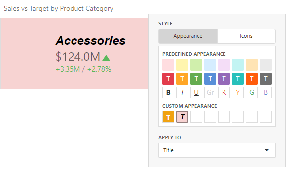

Conditional Formatting
For the Card dashboard item, you can apply conditional formatting to the card's visual elements (like Title, Subtitle, various values) and change the card's background.

Note
Cards that use a legacy layout do not support conditional formatting.
Create a Format Rule
To create a format rule, open the Conditional Formatting section in the dashboard item's Options menu or in the data item menu. Click "+" to add a new format rule:

Specify the data item/card used to calculate a condition in the Common section. You can also create a format rule for one data item and apply different settings to the other data item.
Available settings in the Common section depend on the selected Calculated by option:
- If you select the Card option, specify the card by whose values the format rule is calculated. The format rule applies to the related card. The Value Type option enables you to specify the card's value type according to which a condition is calculated. The expression format condition is an exception to this rule and applies to all cards.
- The Data Item option allows you to select a hidden measure or a series dimension. The rule applies to all cards in the Card item.
Select a format rule type from the list to open its settings.

Select a condition from the list and specify its settings in the Condition section. Available settings depend on the selected format rule.

Appearance Settings
To apply the selected appearance to the Title, Subtitle, values, and other card layout elements, use the Apply to drop-down list. The All elements value applies the format rule to all card elements.
If you select a background color, it applies to the entire card and the Apply to value is not in effect.

Some predefined background styles contain a font color. This font color applies to all card elements regardless of drop-down list settings (for any card layout element).
Edit a Format Rule
To edit a format rule, select the rule and click Edit  .
.

Click Delete to delete the selected format rule.